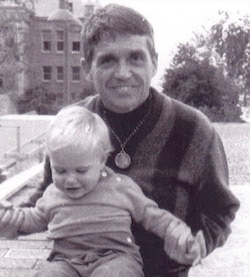

Friends,
"I don't even know whether I want to be remembered. That doesn't really enter into my kind of scheme of life. I was thinking maybe I would like to have on my tombstone something like, 'Thank God it was never dull.'" --Daniel Berrigan, from "Taking Peacemaking Seriously" by John Griffin, Fellowship magazine, 2006
|

Fr. Dan Berrigan and Ethan Vesely Flad in 1968.
|
Thanks to the generous support of friends and family, I am on the road today from North Carolina to New York City to attend the wake and funeral for one of the prophets of our time: Daniel Berrigan, S.J.
Most people reading these words are well aware of Fr. Berrigan's death last Saturday. Indeed, hundreds likely knew Dan personally or would attest to the direct influence on their lives of his teachings and acts of conscience. His prose, poetry, and peacemaking witness changed the U.S. religious and cultural landscape, subverting the institutional church and laying nonviolent siege to political powers.
(For those less familiar with Fr. Berrigan's legacy, you might start with the obituaries in The New York Times and The Washington Post, the lengthy interview republished Saturday by the National Catholic Reporter, and Monday's beautiful hour-long "Moral Giant" profile by "Democracy Now!" featuring interviews with Martin Sheen, Fr. Berrigan's niece Frida Berrigan, and former FOR executive secretary Fr. John Dear.)
Dan had an intimate relationship with the Fellowship of Reconciliation, co-founding the Catholic Peace Fellowship within FOR (with his brother Phil and Trappist monk Thomas Merton, in the mid-1960s), serving as FOR National Council's vice chairperson for nearly two decades starting in the 1970s and '80s, and contributing regularly to Fellowship through the years.
Due to age and circumstance, I was neither privileged to stand next to Dan at a protest, getting arrested together during a civil disobedience action (as some friends have shared in recent days), nor to study at his feet during one of the many courses he taught at an institution of higher learning. My story is located, instead, in the blessing of a familial connection; today's trip to New York City represents for me a trip back in time, to the city where I was born and where, one month later, Fr. Berrigan baptized me into the Christian family.
It took over thirty years before we reconnected in person, but when he welcomed my spouse Rima and me to a meal in his Upper West Side apartment in 2005, it felt as if we'd been visiting him for years. I have since visited Dan another half-dozen times, and in recent years the conversation was primarily led by me due to his failing health and voice.
In addition to his irrepressible sense of humor, three themes come to mind for me from my relationship with Dan: family, faith, and action.
Dan expressed an obvious passion for family. As a single, celibate priest, he was nevertheless deeply connected to his extended family. He wrote to his mother and siblings constantly; some of those letters, in which the word "love" appears repeatedly, are collected in the new book The Berrigan Letters: Personal Correspondence between Daniel and Philip Berrigan, published this week by Orbis. When I sat with Dan, his first questions were always about my parents, my spouse, our child -- how are they doing, he wanted to know? Are they well?
 I last visited Dan on Nov. 4, 2015, when I was back in NYC to attend FOR's Centennial celebrations that began that evening at Union Seminary, where he once taught. Dan was quite weak, and could not say much, but, in a whisper, he inquired as always about my family. And when I spoke of his niece Frida and her children, it was as if hands had been laid on him -- he sat upright, smiled, and spoke energetically. He so loved being an uncle! I last visited Dan on Nov. 4, 2015, when I was back in NYC to attend FOR's Centennial celebrations that began that evening at Union Seminary, where he once taught. Dan was quite weak, and could not say much, but, in a whisper, he inquired as always about my family. And when I spoke of his niece Frida and her children, it was as if hands had been laid on him -- he sat upright, smiled, and spoke energetically. He so loved being an uncle!
Dan's second characteristic I cite is his deep commitment to his Christian belief and religious practice, which was exemplified in his writings, such as this poem:
Song (from Jocopone Da Todi)
In my morning prayer
I saw love written
upon every creature
men on their foreheads
trees on their leaves
houses on their walls
Christ has flowered in man's flesh
Let human nature rejoice!
While many think of him as an activist, Fr. Berrigan was first and foremost a priest.
It has struck me through the years how our culture sometimes seeks to "de-religionize" certain individuals. Like Martin Luther King, Jr. (typically referred to as "Dr. King" rather than "Reverend") and others, Fr. Berrigan was often labeled "communist" as a way to specifically discount and deny his Christian authenticity. Alternatively, spiritually-rooted justice makers, especially those within FOR's community, are labeled as representing the radical margins of their faith traditions, yet in reality they claim the very moral and theological center of those religions.
Dan's spiritual centeredness was core to his witness and encouraged connections with adherents of different faith traditions and lineages, such as the Gethsemani Abbey Peacemakers Retreat convened by FOR, which brought together Protestant and Catholic thinker-activists for a historic collaboration in 1964, and the deep relationship he developed with Buddhist monk Thich Nhat Hanh, who became a long-time interlocutor and co-author.
Last but not least, Dan was of course a person of steadfast and courageous action.
Rooted in his Christian theological understanding, his articulation of nonviolence led directly to a place of moral and political engagement. "From a religious point of view, nonviolence is not primarily a tactic. It is a way of living and being and expressing the truth of your soul in the world. Tactics come and go. Tactics now work and now do not work. The gift of faith, as I understand it, is to be able to die well when called to."
To many people Dan's legacy may appear intimidating. How could we ever compare to this priest who, for instance, helped launch the Plowshares movement: pouring human blood on government property and military draft files, hammering on nuclear warheads?
Yet it was never his goal to stand on a pedestal for others to imitate.
All who knew Dan can testify how deeply human and humble he was, unconcerned about public profile or legacy. Along with his fellow conspirators, he was simply committed to finding creative, provocative ways to resist the status quo of militaristic empire and hegemony, and to inspire action in others.
The Berrigan family released a statement on Saturday, which includes these words: "He was not strategic, he was not opportunistic, but he understood solidarity -- the power of showing up for people and struggles and communities."
I agree; Dan would never have called himself a nonviolent strategist or organizer. "I think this concentration upon political effectiveness is very often a trap. There is in fact very little one can do in certain circumstances. One can only know effects later, or the survivors know what the gift meant. You can't immediately proclaim political effectiveness."
These are life lessons for us today.
Our modern era of activism -- driven by data, proof of impact, and other "hard" assets -- was not his framework. We are challenged instead to engage ourselves in the world, finding a moral center and stepping out from that place. "One cannot level one's moral lance at every evil in the universe. There are just too many of them. But you can do something, and the difference between doing something and doing nothing is everything."
Today, as I head to Manhattan to mourn Dan's death and celebrate his life in community, I am meditating on that challenge. What am I called to do in this moment? As I reflect on my conversations with Dan through the years and read his writing, I find myself grounded once again in a message of love.
Love, love at the end, Dan wrote a half-century ago.
May it be so.
In celebration and peace,
 Ethan Vesely-Flad Ethan Vesely-Flad
Director of National Organizing
Fellowship of Reconciliation
You can view this article online and share it on Facebook or post it on Twitter. |